GTXR / Fin design
Composite rocket fin development
The full design cycle for GTXR's composite rocket fins: screening criteria, shape and core-material trades, alignment tooling, 3D-scan verification, and flight.

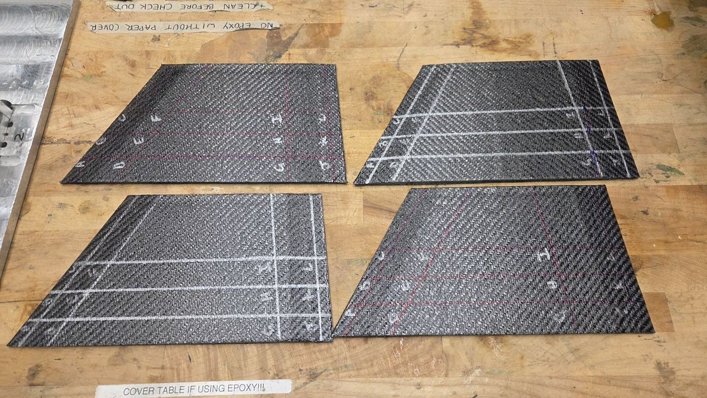
Problem and design criteria
Early fin architecture came down to two decisions: cross-section geometry and core material. I screened the options on four criteria: manufacturability and repeatability, mass, aerodynamic performance, and process safety.
The goal was an architecture that could be built consistently across eight flight fins, not one that maximized single-fin performance. Simulation results informed these architecture-level decisions; detailed geometry optimization was done later by the GTXR simulations team.
Shape trade: hexagonal, short taper
The double wedge was aerodynamically preferred, but the alternative geometry carried only a small predicted apogee penalty, so manufacturing repeatability became the deciding factor.
| Option | Finding | Decision |
|---|---|---|
| Hexagonal | Repeatable to manufacture; higher predicted flutter margin; modest aerodynamic penalty accepted | Selected |
| Double wedge | Aerodynamically preferred, but did not meet the manufacturing criteria | Rejected |
| Short taper | Easier machining; higher flutter margin | Selected |
| Long taper | Difficult to manufacture | Rejected |
| Full taper | Dropped with the double-wedge concept | Rejected |
Core material: full G10
With the hexagonal short-taper shape chosen, the core trade weighed mass against how reliably each core could be built.
| Core | Mass | Finding | Decision |
|---|---|---|---|
| Full G10 | 1.72 lb | Heaviest option, with the highest manufacturing confidence and process repeatability | Selected |
| G10 frame + Rohacell | 0.48 lb | Lightest option, but the foam thermoforming process was not yet mature or repeatable | Rejected |
| Aluminum frame + Rohacell | — | CTE mismatch with carbon fiber; prior hardware showed interface delamination | Rejected |
Double-wedge cores (rigid 10K and Rohacell) had already been ruled out for warping and immature manufacturing processes.
+1.24 lb
Mass accepted with full G10, for manufacturing confidence, repeatability across eight fins, and flutter margin.
The foam-forming process that held back the lighter core became its own study: Thermoforming foam fin cores.
Layup design logic
The fins use GTXR's standard woven layup. The standard comes partly from team history, and I helped change it to its current form.
It uses two quasi-isotropic sets, [0/90 −45/45]s and [0/90 −30/60 −60/30]s, which give approximately direction-independent in-plane stiffness.
Each layup is symmetric about the mid-plane, so B = 0 and there is no membrane-bending coupling, and balanced, so A16 = A26 = 0. The 0/90 plies sit toward the outer surfaces for bending stiffness; the off-axis plies carry shear and torsional stiffness.
Alignment tooling
Four fins had to be bonded at 90° spacing, within ±1° (a requirement from the vehicle sensitivity analysis), with a 1.6° ± 0.1° cant, and the alignment had to hold through bonding and cure. The previous method was labor-intensive and hard to control repeatably.
I led the design of a modular four-tower fixture in SolidWorks and its operating procedure, and aided the CAM programming and machining. The towers adapt to multiple rocket diameters and fin geometries, and laser-cut slots match the fin profiles to set the cant. All four fins are positioned and bonded in one setup.

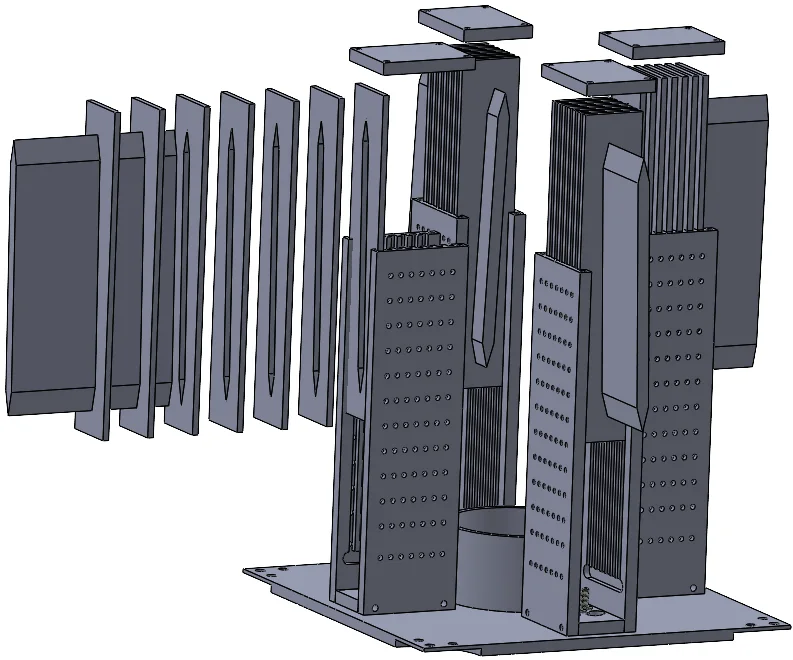

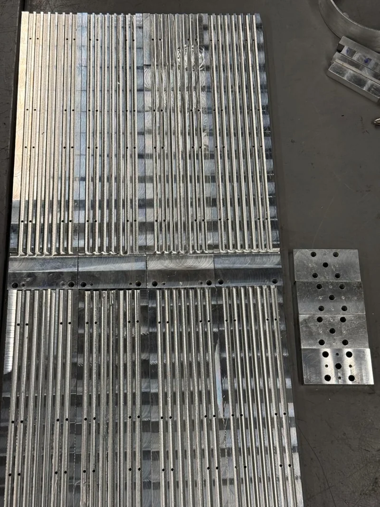

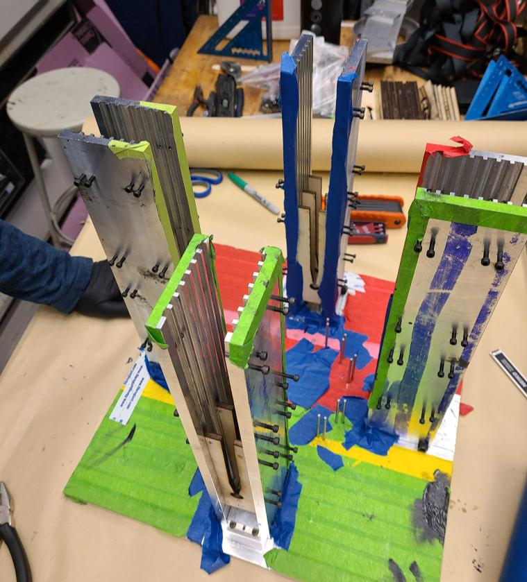

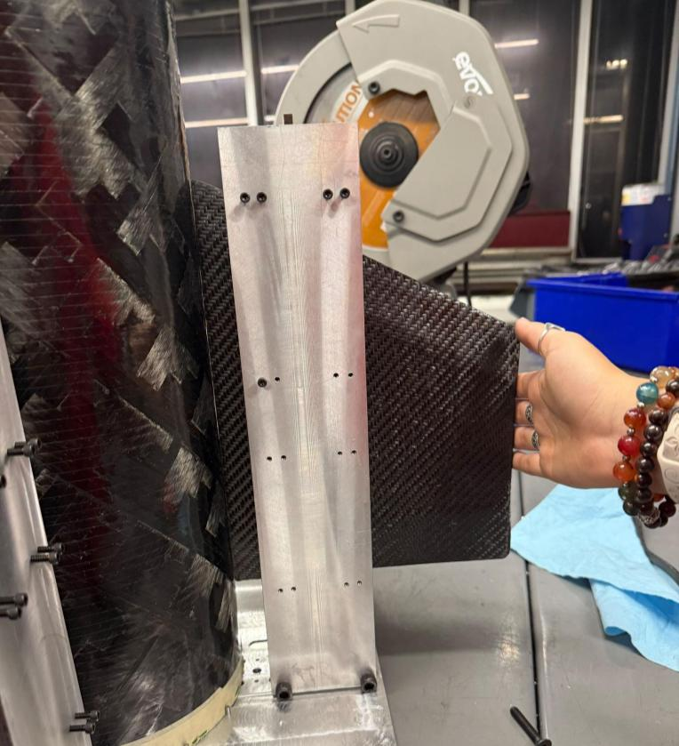
The new tooling saved about 1.5 hours of labor and cut cure time by 24 hours.
Verification by 3D scan
Before the fixture existed, the first mini fin-can, a practice article, was 3D scanned against nominal geometry. One fin exceeded the ±1° clocking tolerance, at 1.041°. Visual inspection alone could not have caught that, so the scan became a formal QC checkpoint before flight hardware.
The fix combined the new alignment tooling with a standardized layup and attachment sequence and improved layup training. Rather than remachining the fixture, I iterated on the process and the fixture's usage instructions. The next practice article was re-scanned: worst-case clocking 0.277°, with all four fins in tolerance.
73%
Reduction in worst-case clocking error, from 1.041° to 0.277°.
Independent metrology (Hexagon) verified the cant within 0.1° of the 1.6° target on all four fins.
Flight fins are not pictured: scans shown are of the practice article, made before the flight fins. The flight fins were scanned separately, at under 0.1° on both clocking and cant.
Since then I have identified limitations in the current fixture and designed improvements to it. Remachining with those changes is planned for the next build cycle.
Before the fixture: first mini fin-can

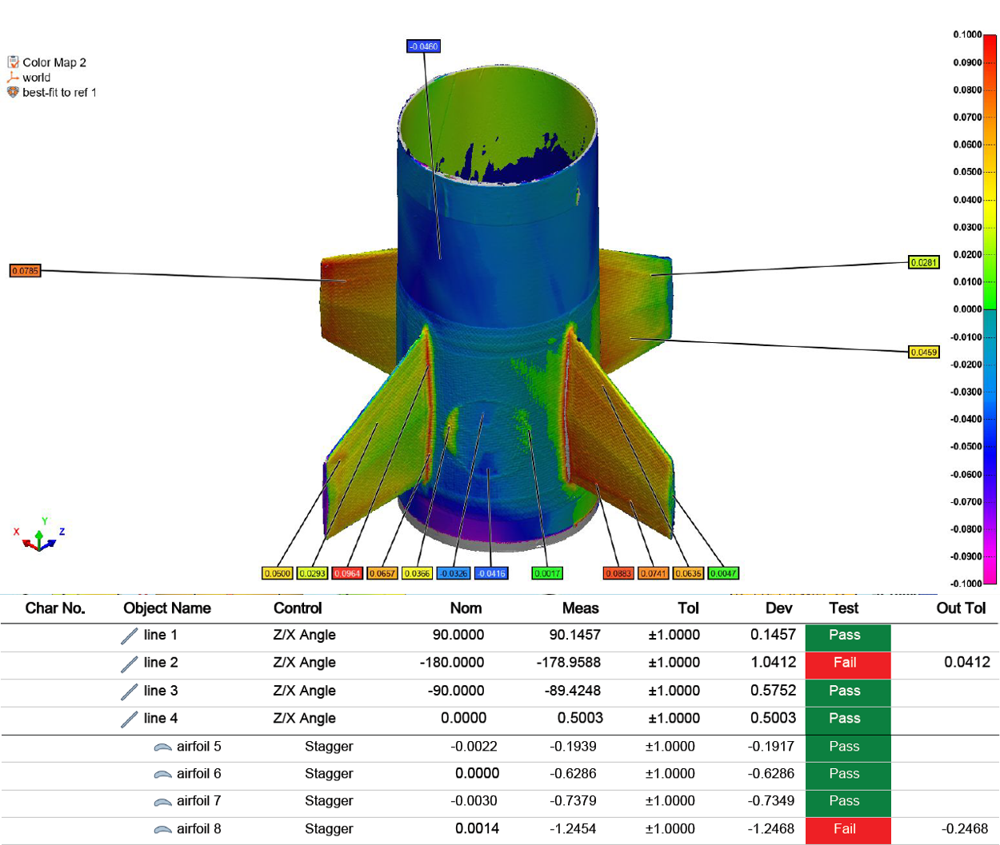
After: practice article re-scan

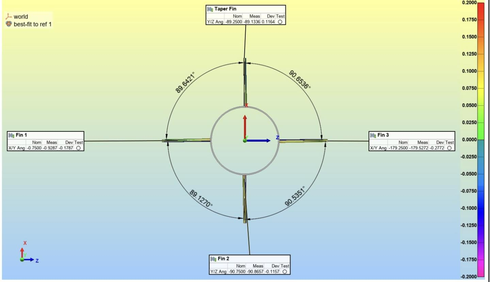
Independent metrology after using the fixture

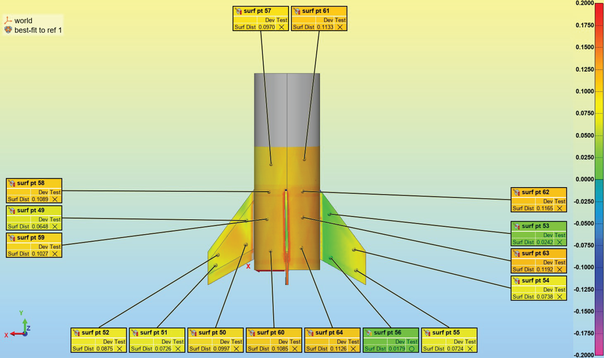
Flight
The design, manufacturing, and verification approach carried through to flight hardware. The booster was recovered with its fins intact in both vehicle cycles. The sustainer had unrelated non-structural anomalies, so its fins were not recovered.

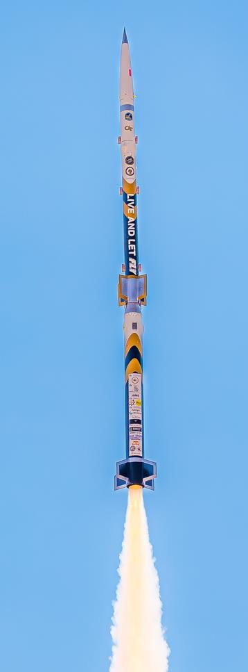

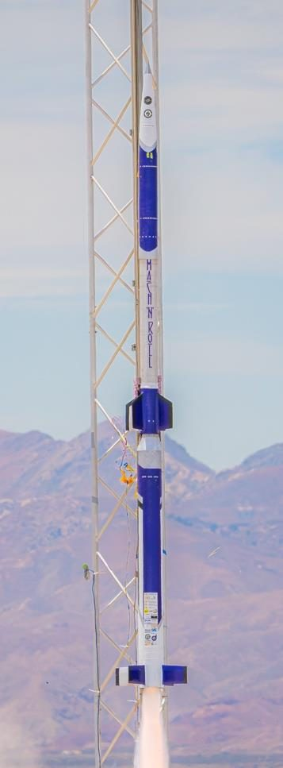

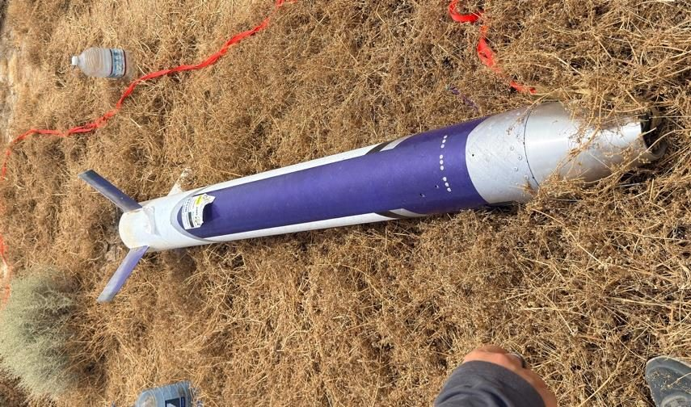